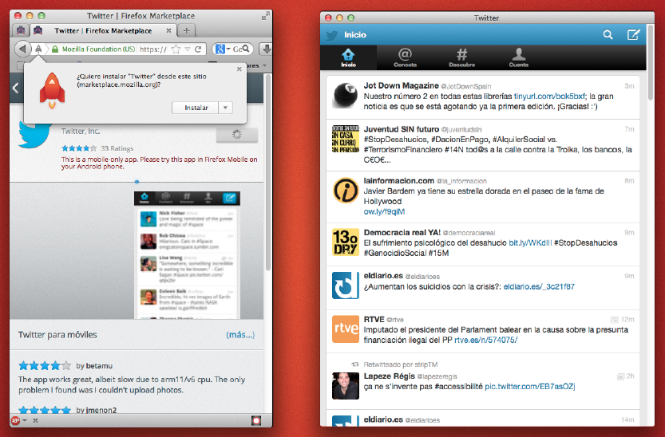

Guillermo López, @willyaranda - Mozilla Hispano.
Today we are going to talk about Firefox OS and how it will make HTML5 live up to the hype that's been made around it.
Hype cycle
Every technology out there goes through the hype cycle. Everyone jumps onto it and wants to have impressive headlines which is why we inflate expectations. After a while we always realise that reality is not all rainbows and unicorns and the pendulum swings the other way. In the end we get to take the technology serious and see how it can be used productively. All of this is frustrating to techies but this is how marketing works. Just building something is not enough - you need to sell it, too.
The great things about HTML5
Promotion of HTML to an application platform
World-wide availability without waiting for hardware
Flexibility - give users what their environment can stomach
Simple development environment - just start writing
Simple deployment - put it on a server and you're done
HTML5 has a lot of great aspects that make it a very interesting proposal for developers.
One size to rule them all…
One of the barriers of HTML5 is hand-made. For years we've been trying to chase the dream of building one thing and make it behave the same everywhere. Instead of embracing the idea that anything on the web can make workable and then enhanced to be more comfortable for better and newer environments, we tried to shoehorn everything new into an existing outdated infrastructure.
The weird thing is that whilst we were clinging to the past rather than celebrating the web stack as the one and only platform flexible enough to support all the environments the web can be consumed in the world around us changed. The mobile revolution is here.
Even in old institutions…
The weird thing is that whilst we were clinging to the past rather than celebrating the web stack as the one and only platform flexible enough to support all the environments the web can be consumed in the world around us changed. The mobile revolution is here.
I could bore you now with numbers and projections showing that more and more mobile devices are being sold. That's neither here nor there for us as developers as all of those are fleeting and can change in months. The thing we have to worry about though is that the mobile platform as it is now is not as open to web technologies as it was heralded when people declared Flash dead.
LIMITED ACCESS TO HARDWARE
Photo de Ricardo Liberato
Fact is that we don't get access to all the hardware parts that make a smartphone interesting. In order to do that we need to package our HTML5 apps in a native wrapper and the performance of these wrappers is worse than those of the browser on these platforms. This lock-out is holding HTML5 back.
LACK OF A "NATIVE" DISTRIBUTION PLATFORM
Photo by Mark Sebastian
The next issue HTML5 has to face is one of perception. The closed platforms have users conditioned that apps can be found in app stores and that it is easy to pay for them there and get upgrades from there. Regardless of what we might be thinking about these stores, people want them - right now.
WOE IS US! HTML5 IS DEAD!
At TechCrunch Disrupt Mark Zuckerberg was interviewed and in the immediate coverage by the tech press quoted as saying that HTML5 was a big mistake.
I think that the biggest mistake that we made as a company was betting too much on HTML5 as opposed to native, because it just wasn't there.
Mark Zuckerberg (cabreado)
The quote went like this.
¿El éxito es irrelevante?
It's not that HTML5 is bad. I'm actually long-term really excited about it. And one of the things that's interesting is we have actually more people on a daily basis using mobile web Facebook that we have using our iOS or Android apps combined . So mobile web is a big thing for us.
What was failed to mention were the interesting bits.
La culpa fue del chachachá…
But there's no doubt that, we went for this approach, we built this internal framework that we called Faceweb , which is basically this idea that we can take the infrastructure that we built out for pushing code everyday, not having to submit to an app store, building web code on the web stack that we have, and that we can translate that into mobile development. We just were never able to get the quality of it we wanted …
It seems the main failure was Facebook's approach and internal system creating HTML5 apps - not the technology itself.
Making of Fastbook - Fastbook
Sencha was so ticked off by this announcement that they built a proof of concept called Fastbook which delivers the same performance in HTML5 that the native iOS app has. Regardless of the academic nature of this we learned a lot of how to optimise our HTML5 solutions to make them work much faster.
WHAT HTML5 NEEDS IS A FLAGSHIP PLATFORM
HTML5 needs a platform that brings its best features to hardware without a conversion step in between. Right now it is treated as a second class citizen where its benefits could make app development much quicker and cheaper.
FIREFOX OS - WE'RE ON IT!
This is where Mozilla is right now going full force to bring a change to that dilemma. Firefox OS is the first truly open operating system for mobile devices.
Mobile World Congress 2013
A really massive splash. This is what the booth looked like almost all the time - packed full of people.
Comparing Firefox OS with Android or iOS head-on is therefore a pointless idea. The aim of Firefox OS is to replace feature phones in emerging markets. True to the main goal of Mozilla to keep the web open and affordable to everyone. It can not be that a means of mass communication and information is only for the rich in certain markets. The web is a voice for a lot of people who can not speak otherwise as their mass media is controlled. Therefore mobile web access needs to be affordable and easy for everyone.
http://arewemobileyet.com
Underneath the hood of Firefox OS are the web APIs - open source drivers with JavaScript interfaces to access all the hardware of the phone.
Firefox OS Simulator
Whilst waiting for the phones with Firefox OS to be available, you can start with the simulator, right in the browser. Just add the extension to Firefox and you are done.
Apps built for Firefox OS also run on Android devices with Firefox installed, which means you can test your apps on your own phone easily.
Firefox Marketplace
Firefox OS will have a marketplace, of course, as this is what people expect. You can publish your apps to this market right now and will get listed once we reviewed the apps.
Having a market is only the first step though. The search interface on the Firefox OS phone does not only group your apps for you - it is also a discovery interface for apps on the web. Where app markets were the Yahoo Directory for finding apps this is the Google. Imagine using the success of any web site to promote its app and vice versa. This is coming.

Having a market is only the first step though. The search interface on the Firefox OS phone does not only group your apps for you - it is also a discovery interface for apps on the web. Where app markets were the Yahoo Directory for finding apps this is the Google. Imagine using the success of any web site to promote its app and vice versa. This is coming.
FirefoxOS "Developer preview"
Geeksphone.com
If you want to get your hands on a Firefox OS device before it comes to the market, there is a company called Geeksphone in Spain that offers affordable developer mobiles with the same specifications. You can pre-order them now.
Non profit
We answer only you
Global community
Internet, "de todos para todos"
THE TIME IS NOW, THE PLACE IS HERE…
Shaun Tan: the lost thing
If you ever wanted to build your first HTML5 app and tyou were disappointed with what platforms give you now, here is your chance to have your first go for Firefox OS.
OFF YOU GO, MAKE AWESOME!
If you already built apps before and want to play in an environment that treats HTML5 as a first class citizen, here is your chance. Go wild. Do new things. The web and HTML5 can beat native any day if we play it to its strengths rather than simulating native.
mozilla.org .org
 Guillermo López, @willyaranda - Mozilla Hispano.
Guillermo López, @willyaranda - Mozilla Hispano.